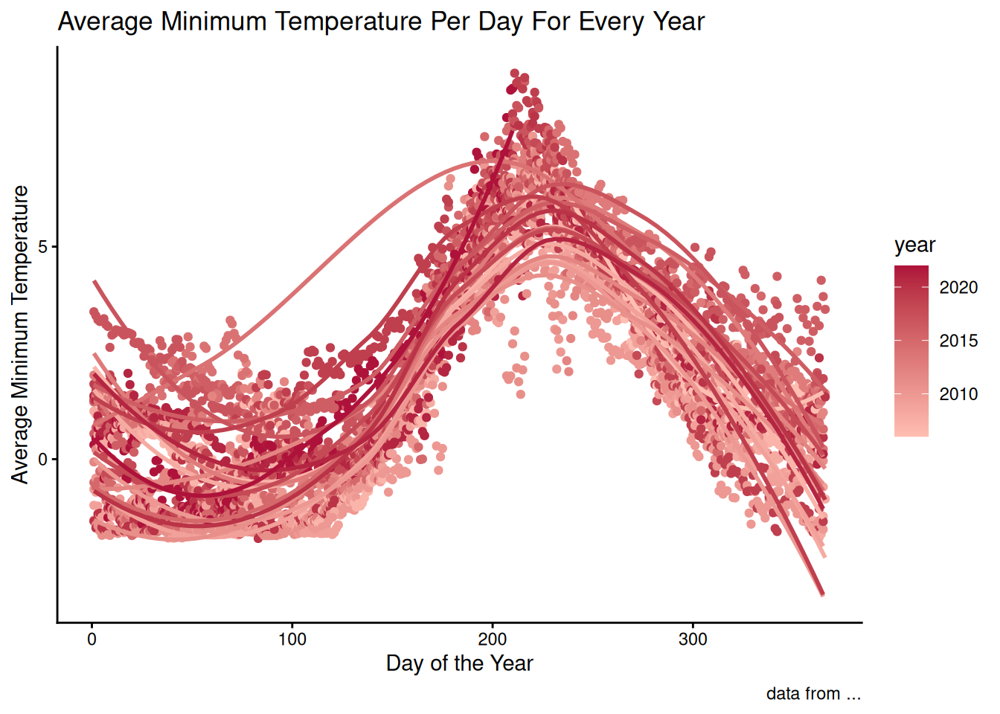
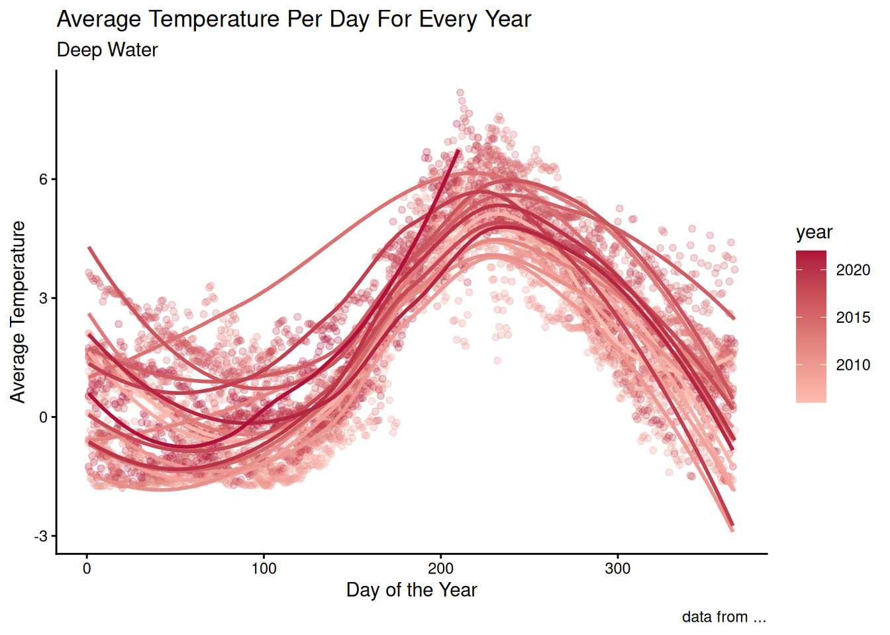
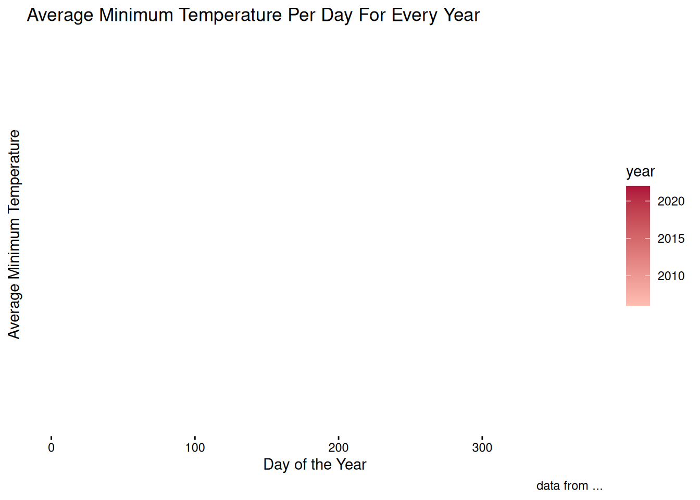
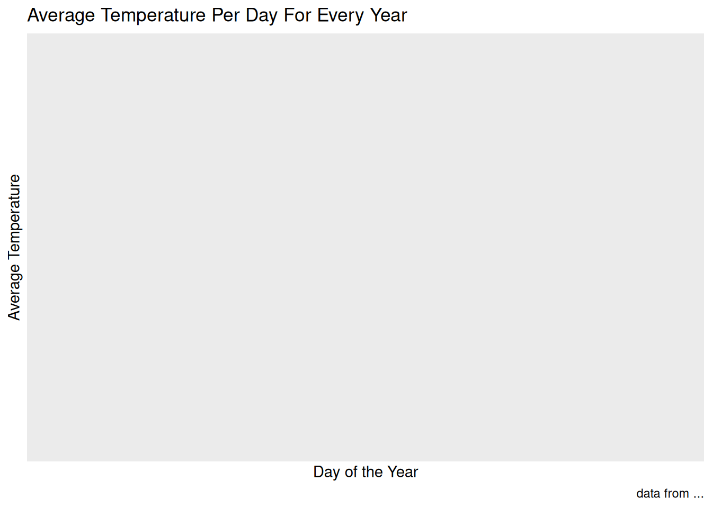

A rapidly growing problem has been Earths environmental change. More specifically, the tremendous change in the Arctic for the past decades. To understand the rate and severity at which the Arctic is losing its sea ice, a 16 year long project was conducted, recording data every 30 minutes from 2006-2022.
What data does this study record exactly, though?
Within the study, the amount of sunlight which was captured a certain distance beneath the surface of water was recorded. It is likely for one to hypothesize throughout the 16 years, the amount of sunlight which was recorded increased due to the reduction of ice in each passing year.
Along with the amount of sunlight being recorded, the temperature of the water was as well being recorded. Like the sunlight, it seems reasonable to assume that the temperature was to increase. Even if the difference seems minimal, the data set is only being taken from a 16 year sample, which is small relative to how long global warming has been affecting Earth.
These two variables were recorded for 4 different sites. Two of these sites were in shallow waters, S1 shallow and S2 shallow. The other two were in deep water, S1 deep and S2 deep.
library(tidyverse)
── Attaching core tidyverse packages ──────────────────────── tidyverse 2.0.0 ──
✔ dplyr 1.2.1 ✔ readr 2.2.0
✔ forcats 1.0.1 ✔ stringr 1.6.0
✔ ggplot2 4.0.3 ✔ tibble 3.3.1
✔ lubridate 1.9.5 ✔ tidyr 1.3.2
✔ purrr 1.2.2
── Conflicts ────────────────────────────────────────── tidyverse_conflicts() ──
✖ dplyr::filter() masks stats::filter()
✖ dplyr::lag() masks stats::lag()
ℹ Use the conflicted package (<http://conflicted.r-lib.org/>) to force all conflicts to become errors
water_temp_shallow <-read.csv("/cloud/project/posts/my_first_post/mergedFiles_Isfjorden.csv")shallow_temps <- water_temp_shallow |>filter(Strata =="shallow")deep_temps <- water_temp_shallow |>filter(Strata =="deep")water_temp_shallow <-NULLdaily_shallow_temps <- shallow_temps |>group_by(Date) |>summarise(mean_temp =mean(Temperature_C, na.rm =TRUE),# Max and min can happen heremin_temp =min(mean_temp),max_temp =max(mean_temp) ) shallow_temps <-NULLdaily_deep_temps <- deep_temps |>group_by(Date) |>summarise(mean_temp =mean(Temperature_C, na.rm =TRUE),# min and max will go here eventuallymin_temp_deep =min(deep_temps$mean_temp),max_temp_deep =max(deep_temps$mean_temp) )
Warning: There were 11324 warnings in `summarise()`.
The first warning was:
ℹ In argument: `min_temp_deep = min(deep_temps$mean_temp)`.
ℹ In group 1: `Date = "01/01/2007"`.
Caused by warning in `min()`:
! no non-missing arguments to min; returning Inf
ℹ Run `dplyr::last_dplyr_warnings()` to see the 11323 remaining warnings.
deep_temps <-NULLdaily_deep_temps<- daily_deep_temps |>mutate(year =year(dmy(Date)),month =month(dmy(Date)),day =day(dmy(Date)),day_of_year =yday(dmy(Date)))daily_shallow_temps<- daily_shallow_temps |>mutate(year =year(dmy(Date)),month =month(dmy(Date)),day =day(dmy(Date)),day_of_year =yday(dmy(Date)) )ggplot(data = daily_shallow_temps,mapping =aes(y = mean_temp, x = day_of_year, group = year, color = year ) ) +geom_point(alpha =0.25) +geom_smooth(se =FALSE) +labs(x ="Day of the Year",y ="Average Temperature",title ="Average Temperature Per Day For Every Year",caption ="data from ..." ) +scale_colour_continuous(low ="#FFBEB2", high ="#AE123A") +theme_classic()
`geom_smooth()` using method = 'loess' and formula = 'y ~ x'
#Minimum Graphggplot(data = daily_shallow_temps,mapping =aes(x = day_of_year,y = min_temp,group = year,color = year) ) +geom_point() +geom_smooth(se =FALSE)+labs(x ="Day of the Year",y ="Average Minimum Temperature",title ="Average Minimum Temperature Per Day For Every Year",caption ="data from ..." ) +scale_colour_continuous(low ="#FFBEB2", high ="#AE123A") +theme_classic()
`geom_smooth()` using method = 'loess' and formula = 'y ~ x'

#Max Graphggplot(data = daily_shallow_temps,mapping =aes(x = day_of_year,y = max_temp,group = year,color = year)) +geom_point() +geom_smooth(se =FALSE)+labs(x ="Day of the Year",y ="Average Maximum Temperature",title ="Average Maximum Temperature Per Day For Every Year",caption ="data from ..." ) +scale_colour_continuous(low ="#FFBEB2", high ="#AE123A") +theme_classic()
`geom_smooth()` using method = 'loess' and formula = 'y ~ x'
ggplot(data = daily_deep_temps,mapping =aes(y = mean_temp, x = day_of_year, group = year, color = year )) +geom_point(alpha =0.25) +geom_smooth(se =FALSE) +labs(x ="Day of the Year",y ="Average Temperature",title ="Average Temperature Per Day For Every Year",caption ="data from ..." ) +scale_colour_continuous(low ="#FFBEB2", high ="#AE123A") +theme_classic()
`geom_smooth()` using method = 'loess' and formula = 'y ~ x'

#Minimumggplot(data = daily_deep_temps,mapping =aes(x = day_of_year,y = min_temp_deep,group = year,color = year)) +geom_point() +geom_smooth(se =FALSE)+labs(x ="Day of the Year",y ="Average Minimum Temperature",title ="Average Minimum Temperature Per Day For Every Year",caption ="data from ..." ) +scale_colour_continuous(low ="#FFBEB2", high ="#AE123A") +theme_classic()
`geom_smooth()` using method = 'loess' and formula = 'y ~ x'
Warning: Removed 5662 rows containing non-finite outside the scale range
(`stat_smooth()`).

ggplot(data = daily_deep_temps,mapping =aes(x = day_of_year,y = max_temp_deep)) +geom_smooth()+labs(x ="Day of the Year",y ="Average Temperature",title ="Average Temperature Per Day For Every Year",caption ="data from ..." )
`geom_smooth()` using method = 'gam' and formula = 'y ~ s(x, bs = "cs")'
Warning: Removed 5662 rows containing non-finite outside the scale range
(`stat_smooth()`).

Improve the color scale - and maybe make a bit of transparency for the smoothed line a well
Also calculate min and max temps and make their own plots